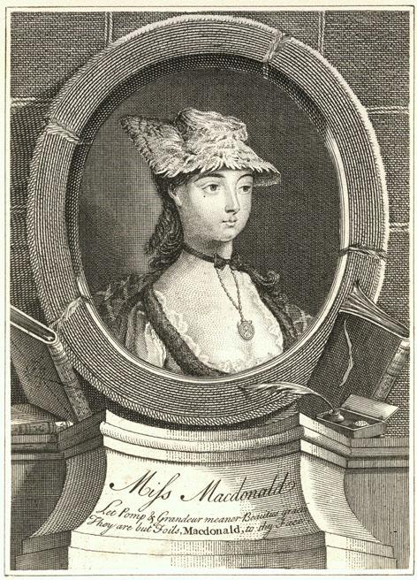
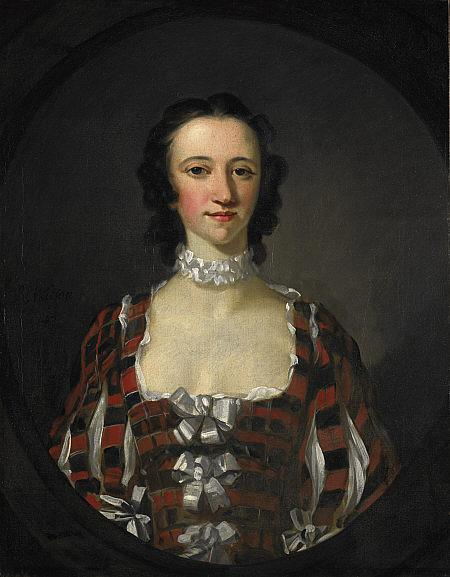
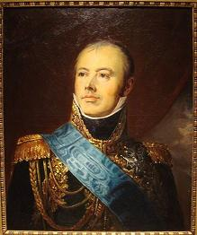
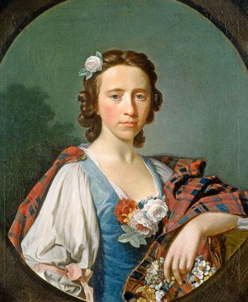
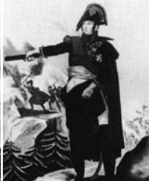
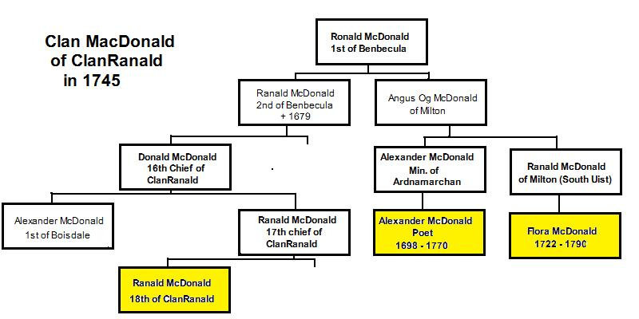

Flora McDonald's lament
Lamentations de Flora McDonald
By James Hogg, "from the Gaelic"
See Hogg's note to "McLean's Welcome" about the meaning of "From the Gaelic".Tune - Mélodie
Slow air composed by Neil Gow Jr (1795-1823), son of Nathaniel
and grandson of the fiddler Niel Gow.
Sequenced by Christian Souchon after Gow's arrangement
|
To the tune:
The Lament of Flora McDonald is one of Hogg’s most popular Jacobite songs, first produced as a song sheet (1820) and later included in the Second Series of his "Jacobite Relics" (under N°92, page 179, in 1821). The tune and its accompaniment were written by Niel Gow junior , who provided Hogg with the original verses which were, so said he, a translation from the Gaelic. Hogg tells us, in a note to this tune in his "Jacobite Relics" vol.2, p.369, that he wrote new lyrics for it, "without altering one sentiment". Hogg was very proud of this song, noting in 1831: ‘I could hardly believe my senses that I had made so good a song without knowing it’. Its popularity is evident in a number of independent song sheets throughout the 1820s and ’30s. It also appeared - in George Thomson’s Select Melodies of Scotland (1822), - in The Border Garland (1828) and - in Songs by the Ettrick Shepherd in 1831 where he calls it ‘Flora Macdonald’s Farewell’. Source: James Hogg research project of the University of Sterling. The verses that inspired to his composition could be a song included in the 1779 anonymous collection, "The True Loyalist" (page 46, "Over yon Hills ...") The site Tobar an Dualchais" harbours a curious conflation of "Flora's Lament" and the folksong "The Unfortunate Rake" in which a soldier gives direction for his own funeral because he has contracted a fatal veneral disease!" |
 |
A propos de la mélodie:
Les Lamentations de Flora McDonald sont l'un des chants Jacobites les plus connus de Hogg. Le morceau fut d'abord publié sous forme de partition de chant (1820), puis introduit dans le second volume de ses "Reliques Jacobites" sous le n° 92, page 179, en 1821. La mélodie et son accompagnement furent composées par Niel Gow jeune , lequel fournit à Hogg les vers originaux, traduits, disait-il, du gaélique. Hogg assure dans une note au sujet de ce chant (dans les "Reliques", vol. 2), qu'il écrivit de nouvelles paroles "sans altérer un seul sentiment", bien que Gow disposât d'un poème original en gaélique. Il était fort fier du résultat et notait en 1831: "Je ne savais pas comment j'avais fait pour composer, sans m'en rendre compte, un chant d'une telle qualité." Le succès du chant lui valut d'être repris dans de nombreuses partitions indépendantes tout au long des années 1820 et 1830. Il figure également dans: - les Mélodies choisies d'Ecosse de Thomson (1822). - la Guirlande du Border (1828) et - les Chants du Berger d'Ettrick en 1831, sous le titre "Adieu de Flora McDonald". Source: James Hogg research project of the University of Sterling. Les vers qui ont inspiré cette composition pourraient être le chant qui figure dans le recueil anonyme publié en 1779, "Le Vrai Loyaliste" (page 46, "Over yon hills ..."). Le site Tobar an Dualchais" recèle un curieux amalgame de la "Complainte de Flora" et du chant "L'infortuné débauché" où l'on voit un soldat préparer ses propres funérailles pour avoir contracté une maladie vénérienne mortelle!" |

 
  
FLORA McDONALD'S LAMENT
1. Far over yon hills of the heather sae green
An' doun by the corrie that sinks to the sea,
The bonnie young Flora sat sighin' her lane,
The dew on her plaid an' the tears in her e'e.
She look'd at a boat wi' the breezes that swung,
Away on the wave like a bird on the main
An' aye as it lessen'd she sigh'd an' she sung,
Fareweel to the lad I shall ne'er see again,
Fareweel to my hero the gallant an' young,
Fareweel to the lad I shall ne'er see again.
2. The moorcock that crows on the brows o' Ben Connal
He kens o' his bed in a sweet mossy hame;
The eagle that soars o'er the cliffs o' Clan Ronald
Unaw'd and unhunted his eyrie can claim;
The solan can sleep on the shelves of the shore,
The cormorant roost on his rock of the sea;
But ah! there is one whose hard fate I deplore,
Nor house, ha', nor hame in this country has he;
The conflict is past and our name is no more,
There's nought left but sorrow for Scotland and me.
3. The target is torn from the arm of the just,
The helmet is cleft on the brow of the brave;
The claymore for ever in darkness must rust,
But red is the sword of the stranger and slave;
The hoof of the horse and the foot of the proud,
Have trod o'er the plums on the bonnet of blue;
Why slept the red bolt in the breast of the cloud,
When tyranny revell'd in blood of the true?
Fareweel, my young hero, the gallant and good,
The crown of thy fathers is torn from thy brow.
LAMENTATIONS DE FLORA McDONALD
1. Au delà des monts couverts de verte fougère,
En bas de la combe qui va vers l'océan,
La belle et jeune Flora gémit, solitaire,
Blottie dans son plaid, les yeux de larmes brillants.
Elle regarde un vaisseau qui hisse les voiles,
Sur la vague fuyant comme l'oiseau de mer,
Au loin il disparaît et elle se lamente:
"Adieu, toi que jamais plus je ne reverrai!
Adieu, jeune héros à l'allure avenante,
Adieu, toi que jamais plus je ne reverrai!"
2. Si le coq de bruyère sur le Ben Connal chante,
C'est qu'un nid de mousse l'attend pour l'abriter;
L'aigle de Clanranald qui survole nos pentes
Possède une aire où nul n'ira l'importuner;
Le fou de bassan dort sur les rocs du rivage,
Et le cormoran perche sur quelque rocher;
Mais celui dont le sort si cruel je déplore,
N'a ni maison ici, ni foyer, ni logis;
Les vaincus n'ont plus d'armes, nul ne les honore,
Et c'en est fait de moi et de mon cher pays!
3. Le bouclier est arraché du bras du juste,
Et sur le front du brave le casque est brisé;
Le claymore n'est plus qu'un symbole vétuste,
Mais rouge de sang le glaive de l'étranger;
Les fers de ses chevaux, les talons de ses bottes
Ont piétiné les panaches des bleus Bonnets;
Pourquoi l'éclair n'a-t-il dispersé ses cohortes,
Lorsque le sang du juste abreuvait le félon?
Adieu, jeune et vaillant héros, la mer t'emporte,
Toi dont jamais couronne ne ceindra le front!
Trad. Ch. Souchon 2004
Before they first met, Charles had been flitting from
hiding place to hiding place in the Outer Isles. In June of
1746 she was at her brother's farm, in charge of the cattle
at their summer upland grazing. She was just 24 years old.
Flora was not a convinced Jacobite. She loved her husband
to be Allan McDonald of Kingsburgh who was a Redcoat officer whom she was to marry in 1750 and her
foster-father, Clanranald, the Chief of her clan, the McDonalds of Clanranald, was commander of English troopers
on Benbecula.
Nevertheless, she apparently did not like the
idea of the young Stuart heir being sent to death, although
she first refused to guide him when she was approached to
that end by her remoted kinsman (?), Neil McEachen [1] who was
with the fugitive and her foster-father.
She accepted when she heard that the plan to have the Prince
taken to Skye was thought of by her very own foster-father,
considering that the Prince's departure would put an end to
the disquiet brought to the small island by his presence.
Her objection to spending "so much time alone with the
Prince" yielded to the promise that a Neil McDonald
would accompany them. But the chief argument that induced her
to accept was that her kinswoman Allie was also asked and had
not dared to serve the Prince.
At a later period she told the Duke of Cumberland, son of George II and commander-in-chief in Scotland, that she acted from charity and would have helped him also if he had been defeated and in distress.
The commander of the militia in the island was also a Macdonald and probably a sympathizer of the Jacobite cause. He gave her a pass to the mainland for herself, a manservant, an Irish spinning maid, Betty Burke, and a boat's crew of six men.
Flora and Lady Clanranald prepared the clothes for "Betty Burke" and on June 20th 1746 they met the Prince.
News reached them that General Campbell had landed on the
island with orders to search for the escaping Prince. The
general disregarded the advice from the local Reverend
Mr McCauley as to the hiding place of the Prince and did not
complete his orders. He was nowhere to be seen when Flora,
Neil, "Betty" and four oarsmen left in a boat and crossed
the Minch, on the 27th.
After a first repulse at Waternish, Skye, the party landed at Portree, Skye. The prince was hidden in a cave while Flora Macdonald found help for him in the neighbourhood.
Whether there was or not a romance between the two matters
little: that Flora did indeed put her life at stake for the
fleeing Prince is romance enough for most.
The talk of the boatmen brought suspicion on Flora Macdonald
who was arrested on her way back to her home in Armadale, taken on board Captain Ferguson's boat (who commanded a party of Campbell's men) and later sent to the Tower of London. As she had become a celebrity, the
government did not dare try her case.
After a short imprisonment in the Tower, she was allowed to live outside of it, under the guard of a "messenger". When the amnesty came for most of the Jacobites (Indemnity Act) in 1747, she was released.
She emigrated with her husband and her two sons in 1774 to North Carolina where they settled as farmers. Her husband fought in a regiment of Royal Highland emigrants at the start of the American war of Independence, in 1776, was captured and then expelled to Nova Scotia, where they lived for a time.
She returned to her native Skye in 1779, leaving behind her husband, her two sons (and her name to be given to a hamburger chain). During the passage, the ship was attacked by a privateer. She refused to leave the deck during the attack and was wounded in the arm.
When she died at Kingsburgh on the Isle of Skye, in 1790, at the age of 68, over three thousand people attended her funeral. She is buried at Kilmuir on Skye and there is a statue to her memory in Inverness.
Dr Johnson's epitaph on her grave reads thus: "Flora McDonald, Preserver of Prince Charles Edward Stuart. Her name will be mentioned in history and, if courage and fidelity be virtues, mentioned with honour."
Another lament to a different tune:
Flora's Lament for her Charlie
The Eachen McDonalds are, as stated in an article by the Rev. Dr. McDonald, in the 1884 Christmas number of the "Charlottetown Herald", descended from Eachan (usually translated as "Hector"), second son of Roderick McDonald, third chief of Moydart and Clanranald.
This Neil McEachen who was instrumental in ensuring the Prince's escape in the Uists, as mentioned above, had studied, during about a year, for the Catholic priesthood at the Paris Scots Colllege. When he left the college in 1737 he could speak, in addition to his native Gaelic, English, French, Latin and Greek. On account of health problems he eventually decided not to become a priest. Various sources mention that he was a local teacher in Uist, or perhaps the tutor of the Laird of ClanRanald.
Neil left for France with the Prince aboard l'Heureux and the Prince de Conti in September 1746. There he changed his (unpronounceable) surname to this of his chief, Macdonald. He enlisted in the Albany's Regiment of the French Army. He became a lieutenant in Ogilvy's Regiment in 1746, took part in several campaigns in the Seven Years War. He married (or failed to marry) Alexandrine Gonant in 1763. When the Scottish Regiments were disbanded, he pensioned off and moved to Sedan, in 1765, where his son was born. He died allegedly in 1767.
His son Alexandre Macdonald became a famous Marshal of Napoléon
who created him Duke of Tarentum, in acknowledgment of his achievements at the battle of Wagram. Marshal Macdonald returned to Scotland in 1825. He met Sir Walter Scott and his McDonald forbears in the Hebrides (his father was born at Howbeg, South Uist).
Avant leur première rencontre, Charles avait passé deux
mois à fuir de cachette en cachette dans les Hébrides
Extérieures. En juin 1746, elle se trouvait chez son
frère, chargée du troupeau pendant l'alpage d'été. Elle avait
juste 24 ans. Flora était loin d'être une Jacobite
convaincue. Elle aimait son futur mari, Allan
McDonald de Kingsburgh, officier de l'armée anglaise qu'elle épousera en 1750 et son père adoptif,
Clanranald, le chef de son clan, les McDonald de Clanranald, commandait la cavalerie anglaise de Benbecula.
Néanmoins, elle ne pouvait accepter, semble-t-il, que le
jeune héritier des Stuarts soit condamné à mourir, bien
qu'elle ait refusé d'abord de lui servir de guide, comme
l'en priaient son cousin, Neil McEachen [1] qui
accompagnait le fugitif et son beau-père qui l'avaient
contactée à cet effet.
Elle accepta quand elle apprit que le plan pour conduire
le Prince vers Skye avait été échafaudé par son beau-père
lui-même et eu égard au fait que le départ du Prince
ramènerait le calme sur la petite île que sa présence
perturbait. Son inquiétude d'avoir à passer "tant de temps
seule avec le Prince" prit fin lorsqu'on lui promit que Neil
McDonald les accompagnerait. Mais le principal argument qui
emporta son adhésion, fut de lui dire que sa cousine Allie,
à qui l'on avait fait la même demande, n'avait osé y donner
suite.
Plus tard elle répondra au Duc de Cumberland, fils de Georges II et commandant en chef en Ecosse qu'elle avait agi par compassion et qu'elle l'aurait aidé de la même façon, s'il avait été vaincu et réduit à la même détresse.
Le commandant de la milice de l'île, un McDonald lui aussi et sans doute un sympathisant de la cause jacobite, lui fournit un sauf-conduit pour le "continent écossais" valable pour elle-même, une domestique désignée comme la fileuse irlandaise Betty Burke et un équipage de six hommes.
Flora et Lady Clanranald préparèrent les vêtements de "Betty Burke" et, le 20 juin 1746, elles rencontrèrent le Prince.
La nouvelle leur parvint que le Général Campbell avait
débarqué sur l'île avec l'ordre d'y chercher le Prince en
fuite. Le général ignora les indications du pasteur local
McAuley quant à la cachette du fugitif et n'exécuta pas les
ordres reçus. Il demeura invisible lorsque Flora, Neil,
"Betty" et quatre rameurs s'embarquèrent pour traverser
le détroit du Minch (entre les Hébrides extérieures et Skye), le 27.
Après avoir été repoussés à Waternish, ils accostèrent à Portree sur l'Île de Skye. Le Prince se cacha dans une caverne tandis que Flora allait lui chercher de l'aide dans les environs.
Idylle ou pas, le fait que Flora ait risqué sa vie pour le
Prince fugitif est pour beaucoup un acte empreint du plus
pur romantisme.
Les commérages des bateliers attirèrent les soupçons sur
Flora qui fut arrêtée à son retour à son domicile, à Armadale et enfermée sur le bateau d'un officier de Campbell, le Capitaine Ferguson, avant d'être envoyée à la Tour de Londres. Comme elle était devenue une célébrité,
on n'osa pas la juger.
Après une courte détention elle fut autorisée à habiter à l'extérieur de la Tour, sous la surveillance d'un "messager" et lorsque l'amnistie fut accordée à
la plupart des Jacobites elle profita de cette clémence.
Elle émigra avec son époux et ses deux fils en 1774 en Caroline du Nord où ils exploitèrent une ferme. Son mari
combattit dans un régiment royal d'émigrés des Highlands au début de la guerre d'indépendance américaine en 1776, fut fait prisonnier, puis, une fois relâché, expulsé vers la Nouvelle Ecosse, où ils vécurent deux ans.
Puis elle retourna
à Skye en 1779, laissant derrière elle son époux, ses deux fils (et son nom qui allait servir d'enseigne à une fameuse chaîne de restauration rapide). Pendant la traversée, le bateau fut attaqué par des corsaires. Elle refusa de quitter le pont pendant l'attaque et fut blessée au bras.
Lorsqu'elle mourut à Kingsburgh sur l'Île de Skye en 1790, à l'âge de 68 ans, plus de 3000 personnes assistèrent à ses funérailles.
Elle est enterrée à Kilmuir dans l'île de Skye et on lui éleva un monument à Inverness.
Sa tombe porte cette épitaphe du Dr Johnson: "Ci-gît Flora McDonald, protectrice du Prince Charles Edouard Stuart. L'histoire retiendra son nom. Tant que courage et loyauté seront mis au rang des vertus, il sera synonyme d'"honneur".
Une autre complainte sur une mélodie différente:
"Flora se lamente pour Charlie"
Les Eachen McDonald, selon un article du Rev. Dr. McDonald, paru dans le numéro de Noël 1884 du "Charlottetown Herald", descendent d'Eachan (rendu habituellement par "Hector"), fils cadet de Roderick McDonald, troisième chef de Moydart et Clanranald.
Ce Neil dont l'aide fut si décisive pour assurer la fuite du Prince hors des îles d'Uist, comme on l'a vu, avait étudié, environ une année, pour devenir prêtre catholique au collège des Ecossais de Paris. Quand il quitta cet établissement en 1737 il connaissait, outre son gaélique maternel, l'anglais, le français, le latin et le grec. Des problèmes de santé le contraignirent finalement à renoncer à la prêtrise. Diverses sources mentionnent qu'il fut instituteur à Uist, ou peut-être précepteur chez le Laird de ClanRanald.
Neil quitta l'Ecosse pour la France avec le Prince à bord de l'Heureux et du Prince de Conti en Septembre 1746. Une fois en France, il remplaça son (imprononçable) patronyme par celui de son chef, Macdonald, et s'engagea dans le Régiment d'Albanie. Il fut promu lieutenant dans le régiment d'Ogilvy en 1746 et participa à plusieurs campagnes de la guerre de Sept Ans. Il épousa (?) Alexandrine Gonant en 1763. Quand les Régiments écossais furent dissous, il réclama sa pension et déménagea à Sedan en 1765. C'est là que naquit son fils. On pense qu'il mourut en 1767.
Son fils, Alexandre MacDonald allait devenir le fameux maréchal d'Empire
que Napoléon fit Duc de Tarente, en récompense de ses exploits à la bataille de Wagram. Le maréchal Macdonald revint en Ecosse en 1825. Il rencontra Walter Scott et ses ancêtres McDonald dans les Hébrides (son père était né à Howbeg, en South Uist).